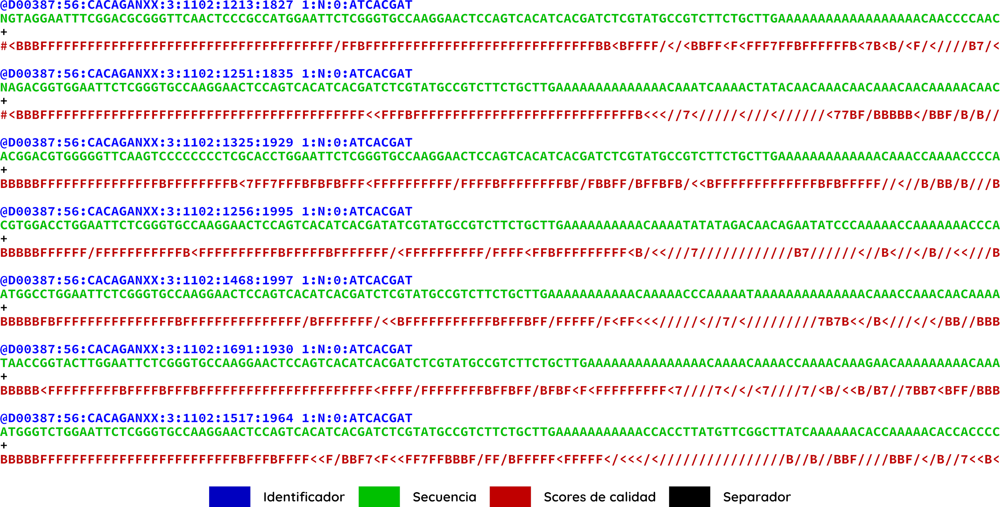
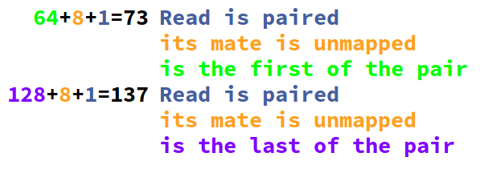

Call me by your reads¶
Introducción¶
A lo largo de las secuencias genómicas, los organismos de una misma especie pueden presentar variaciones que van desde un nucleótido hasta regiones cromosómicas complejas.
Los cambios pequeños que van desde 1 hasta 100 nucleótidos representan una fuente de variación entre organismos de una misma especie con la suficiente tolerancia para ocurrir con frecuencias elevadas (SNPs) y con los efectos suficientemente grandes para poder ser detectados como mecanismos causales de enfermedades o asociados a fenotipos específicos
El llamado de variantes genéticas a partir de datos de secuenciación masiva ha sido empleado primariamente en humanos con la finalidad de encontrar mecanismos de patogenicidad en enfermedades hereditarias, pero tambien ha sido empleado para análisis de variantes comunes asociadas a fenotipos específicos no deletéreos (GWAS).
- Debido a su relación costo beneficio y a su amplia utilidad, este tipo de metodologías ha sido empleado en genotipifcación de otros organismos además del humano:
En virus como el virus de inmunodeficiencia humana se pueden detectar variantes asociadas a la resistencia a tratamiento antiretroviral
En microorganismos patógenos se puede realizar la detección de variantes asociadas a resistencia a antibióticos
En animales se puede realizar la detección de variantes para estudios de conservacion y de mejoramiento de razas (como en ganado y en crianza de perritos)
En plantas se puede realizar la genotipificación de variedades específicas para selección y mejoramiento de cultivos (como en trigo, maíz, chile y frijol)
- El procedimiento general consiste en:
- Un experimento de secuenciación
Puede ser secuenciación de genoma completo
Puede ser secuenciación de regiones específicas
Puede ser secuenciación de regiones aleatorias

- Alineamiento de las lecturas a un genoma de referencia
… ó no
- Llamado de variantes
Pueden llamarse variantes por individuo
Pueden llamarse variantes por conjunto de individuos
- Genotipificación y faseo de los alelos
Construcción de haplotipos basado en secuenciación (usando long reads)
Construcción de haplotipos basado en relaciones interindividuales (usando árboles genealógicos)

- En este curso aprenderás a usar comandos básicos de linux y GATK4 para el llamado de variantes genómicas a partir de datos de secuenciación masiva obtenidos de muestras humanas por individuo
La documentación de todo el curso estará disponible conforme avance el curso en readthedocs.org
Mándanos tus preguntas, comentarios, sugerencias y quejas a nuestro canal en discord
Linux¶
Introducción¶
Existen múltiples programas para el llamado de variantes, no obstante la gran mayoria no puede ser ejecutada en ambientes windows. En consecuencia, es importante estar familiarizado con el uso de sistemas unix/linux como puede ser Mac-OSX o Ubuntu linux.
Adicionalmente, muchos de los programas para el llamado de variantes no cuenta con una interfáz gráfica de usuario, por ello, es importante aprender a usar la línea de comandos con fluidez
La bendita instancia¶
En esta ocasión te preparamos una máquina especial a la que puedes accesar en el horario del curso. Es una instancia en Amazon Web Services y de ahora en adelante nos referiremos a esta máquina como «la instancia» Para ingresar a la instancia necesitas una llave que te otorgamos en el archivo «atg.pem». no necesitas abrir este archivo, solamente debes ponerlo en tu carpeta personal
Si usas windows, así puedes accesar a tu carpeta personal:
Abre un explorador de archivos
Ve a la carpeta «Este equipo»
Ve a la carpeta «C:\»
Ve a la carpeta «Users» (o usuarios, dependiendo de tu equipo)
Ve a la carpeta con tu nombre de usuario
Si usas linux, así puedes accesar a tu carpeta personal:
Abre un explorador de archivos
En la barra lateral podrás encontrar tu carpeta personal con el icono de una casa

Si usas mac, así puedes accesar a tu carpeta personal:
Ya que tengas tu archivo atg.pem en tu carpeta personal, no la muevas ni le cambies el nombre. Ahora vamos a abrir la terminal
Si usas windows, inicia una sesión con mobaxterm
Si usas linux, abre tu terminal
Si usas mac, abre tu terminal en Aplicaciones -> Utilidades -> Terminal
A continuación vamos a blindar nuestra llave para que funcione adecuadamente
chmod 400 atg.pem
Una vez hecho esto, vamos a iniciar sesión en la instancia (recuerda cambiar «vflorelo» por tu nombre de usuario)
ssh -i atg.pem vflorelo@atgenomics.ddns.net
Nota
Es importante que distingas:
Cuando estás trabajando en la instancia, la barrita en la terminal dice atgenomics
Cuando estás trabajando en una terminal local, la barrita no dice atgenomics

Consideraciones y conceptos¶
Importante
Para el uso óptimo de la línea de comandos debemos tener en consideración las siguientes definiciones y precauciones
Shell¶
Es el intérprete entre el usuario y las aplicaciones
El shell recibe una entrada a manera de comandos
Estos comandos operan a través de aplicaciones
Las aplicaciones interactuan con el kernel controlando el procesador, la memoria RAM y el disco de la máquina
Terminal¶
La terminal o línea de comandos es una interfáz no gráfica con la cúal el usuario puede interactuar con el sistema. A pesar de su simpleza es una interfaz sumamente poderosa y eficiente, ya que nos permite ver que es lo que está ocurriendo tras bambalinas mientras un programa se está ejecutando. Es un estándar en el cómputo y seguirá siendolo por mucho tiempo más.

Prompt¶
- El prompt es la linea en la terminal que nos indica que nuestra consola está responsiva y que puede aceptar comandos del usuario
Peligro
Si no hay prompt no podemos mandar comandos

Comando¶
Un comando es la primera palabra que va después del prompt (o después de un pipe "|", eso lo veremos en parseo ), un comando es esencialmente un elemento ejecutable que puede ser un programa binario o un script
Opción¶
Ciertos comandos y programas pueden comportarse distinto si le pasamos una o más opciones.
Advertencia
Las opciones se especifican con el signo “-” o con los signos “--”

Argumento¶
Un argumento es una o más palabras que vienen después de un comando, pueden ir antes o después de una opción (o no llevar opciones incluso)
Advertencia
Los argumentos no llevan “-” ni “--” y en ocasiones conviene delimitarlos con comillas

Combinaciones¶
En muchas ocasiones necesitaremos de opciones y de argumentos de modo que es indispensable saber como combinarlos
Advertencia
El orden de las opciones y argumentos es fundamental en la ejecución de los comandos que usaremos a partir del día 3

$PATH¶
En unix/linux la variable de entorno $PATH contiene el conjunto de directorios que alberga aplicaciones en nuestro sistema
Peligro
Es una variable muy sensible, y moverla sin conocimiento puede tener consecuencias que afecten la sesión del usuario, hay que modificarla lo menos posible

Truco
Si queremos instalar un programa nuevo, lo podemos colocar en cualquiera de las carpetas enlistadas anteriormente y lo podemos invocar desde cualquier sitio en nuestra terminal
Uso de mayúsculas y minúsculas¶
Peligro
Los sistemas unix/linux son sensibles al uso de mayúsculas y minúsculas!
Es importante revisar siempre lo que ingresas en la terminal antes de mandar cualquier instrucción
Uso de caracteres especiales¶
Existen caracteres con un significado específico del sistema, en consecuencia, se deben tratar de forma especial.
Estos caracteres son los siguientes y por lo general los ubicas en tu teclado en la barra numérica:
@
#
$
%
^
&
*
-
+
=
( )
{ }
[ ]
;
:
,
'
"
<
>
.
/
?
\
|
Advertencia
Si alguno de nuestros archivos tiene espacios en su nombre (o caracteres especiales), la terminal necesita saber que estos espacios son parte del mismo argumento
$ cat mi archivo.txt cat: mi: No such file or directory cat: archivo.txt: No such file or directoryCuando hicimos el comando
cat mi archivo.txt, lo que está ocurriendo es quecatespera dos archivos, un archivo llamado "mi", y un archivo llamado "archivo.txt".Al no existir estos archivos, la terminal nos arroja un mensaje de error
Esto lo solucionamos de dos formas:
Truco
Encerrando 'mi archivo.txt' entre comillas (dobles o sencillas):
$ cat "mi archivo.txt" Hola mundo!Escapando el espacio con el simbolo “\”:
$ cat mi\ archivo.txt Hola mundoAmbas soluciones hacen que «mi archivo.txt» sea un solo argumento en vez de dos.
Estas soluciones funcionan también para el resto de los caracteres especiales.
Comandos básicos¶
En esta sección encontraremos comandos básicos para el manejo de archivos, es indispensable que tengamos familiaridad con estos comandos antes de continuar con la manipulación de archivos
ls¶
List, nos indica que elementos hay en el directorio actual
Opciones de ls
Listado de los archivos en formato extendido (
-l)Listado de los archivos en formato extendido en lenguaje humano (
-l -h)Listado de los archivos incluido archivos ocultos (
-a)Listado de los archivos en orden cronológico (
-l -h -t)Listado de los archivos en orden alfanumérico reverso (
-l -h -r)Listado de los archivos en orden cronológico reverso (
-l -h -r -t)
cd¶
Change Directory nos cambia al directorio que le indiquemos
Modos de operación de cd
Dirigirse a un directorio dentro del directorio actual:
$ pwd /home/vflorelo $ ls dia_01 $ cd dia_01 $ pwd /home/vflorelo/dia_01 $ ls Homo_sapiens_GRCh38.fasta.fai test_data_variants.tsv test_data_variants.vcf
Dirigirse a un directorio usando una ruta absoluta:
$ pwd /home/vflorelo $ cd /home/vflorelo/dia_01 $ pwd /home/vflorelo/dia_01 $ cd /usr/local/bioinformatics $ pwd /usr/local/bioinformatics $ ls bcftools bin bwa data htslib include lib libexec samtools share $ cd /home/vflorelo/dia_01 $ pwd /home/vflorelo/dia_01
Dirigirse al directorio superior:
$ pwd /home/vflorelo/dia_01 $ cd .. $ pwd /home/vflorelo
Dirigirse a un directorio usando una ruta relativa:
$ pwd /home/vflorelo/dia_01 $ cd ../dia_02 $ pwd /home/vflorelo/dia_02
mkdir¶
Make Directory, crea un directorio con el nombre que le indiquemos
Modos de operación de mkdir
Crear a un directorio dentro del directorio actual:
$ pwd /home/vflorelo $ ls dia_01 $ mkdir dia_02 $ ls dia_01 dia_02
Crear un directorio usando una ruta absoluta:
$ pwd /home/vflorelo $ mkdir /home/vflorelo/dia_03 $ pwd /home/vflorelo $ ls dia_01 dia_02 dia_03
Crear un directorio usando una ruta relativa:
$ pwd /home/vflorelo/dia_01 $ mkdir ../dia_04 $ cd .. $ pwd /home/vflorelo $ ls dia_01 dia_02 dia_03 dia_04
cp¶
Copy, copia un archivo a un directorio (o al mismo directorio pero con nombre diferente)
Modos de operación de
cp
Copiar el contenido de un archivo a otro archivo:
$ cp mi_archivo.txt mi_nuevo_archivo.txt $ cat mi_nuevo_archivo.txt Hola mundo!Copiar el archivo desde el directorio actual a otro directorio:
$ ls mi_archivo.txt otro_directorio $ ls otro_directorio $ cp mi_archivo.txt otro_directorio $ ls otro_directorio mi_archivo.txtAdvertencia
Si no existe el directorio “otro_directorio”, cp creará un nuevo archivo llamado “otro_directorio”
mv¶
Move, mueve un archivo de un lugar a otro (o le cambia el nombre al archivo)
Modos de operacion de
mv
Cambia el nombre de un archivo a otro archivo:
$ mv mi_archivo.txt mi_nuevo_archivo.txt $ cat mi_nuevo_archivo.txt Hola mundo! $ cat mi_archivo.txt cat: mi_archivo.txt: No such file or directoryMover el archivo desde el directorio actual a otro directorio:
$ ls mi_archivo.txt otro_directorio $ ls otro_directorio $ mv mi_archivo.txt otro_directorio $ ls otro_directorio $ ls otro_directorio mi_archivo.txtAdvertencia
Si no existe el directorio «otro_directorio», mv le cambiará el nombre a “mi_archivo.txt” y se llamará “otro_directorio”, “mi_archivo.txt” no existirá más
Peligro
Si ya existe un archivo con el nombre que le indiquemos a
mvcomo destino, perderemos la información del archivo destino:$ ls archivo_equis.txt tesis_final.docx $ cat archivo_equis.txt Este archivo contiene basura $ mv archivo_equis.txt tesis_final.docx $ ls tesis_final.docx $ cat tesis_final.docx Este archivo contiene basura
rm¶
Remove, elimina el archivo o directorio indicado
Modos de operacion de
rm
elimina un archivo:
$ ls mi_archivo.txt mi_nuevo_archivo.txt $ rm mi_archivo.txt $ ls mi_nuevo_archivo.txtElimina un directorio con todos sus elementos:
$ ls otro_directorio $ ls otro_directorio mi_archivo.txt $ rm -r otro_directorio $ ls otro_directorio ls: cannot access 'otro_directorio': No such file or directoryPeligro
rmes un comando destructivo, si se borran los archivos no son recuperables
cat¶
Concatenate, nos muestra el contenido de un archivo, o archivos
less¶
Less nos muestra el contenido de un archivo, pero nos lo muestra, una pantalla a la vez
head¶
- Head, nos da las primeras N líneas de un archivo
Modos de operación de
headMuestra las primeras 10 líneas de un archivo:
$ head Homo_sapiens_GRCh38.fasta.fai 1 248956422 16 70 71 2 242193529 252512975 70 71 3 198295559 498166428 70 71 4 190214555 699294797 70 71 5 181538259 892226719 70 71 6 170805979 1076358398 70 71 7 159345973 1249604479 70 71 8 145138636 1411226840 70 71 9 138394717 1558438902 70 71 10 133797422 1698810704 70 71
Muestra las primeras 2 líneas de un archivo:
$ head -n2 Homo_sapiens_GRCh38.fasta.fai 1 248956422 16 70 71 2 242193529 252512975 70 71
Muestra las primeras líneas de un archivo exceptuando las ultimas 2 líneas:
$ head -n-2 Homo_sapiens_GRCh38.fasta.fai 1 248956422 16 70 71 2 242193529 252512975 70 71 3 198295559 498166428 70 71 4 190214555 699294797 70 71 5 181538259 892226719 70 71 6 170805979 1076358398 70 71 7 159345973 1249604479 70 71 8 145138636 1411226840 70 71 9 138394717 1558438902 70 71 10 133797422 1698810704 70 71 11 135086622 1834519535 70 71 12 133275309 1971535983 70 71 13 114364328 2106715242 70 71 14 107043718 2222713363 70 71 15 101991189 2331286294 70 71 16 90338345 2434734517 70 71 17 83257441 2526363427 70 71 18 80373285 2610810278 70 71 19 58617616 2692331770 70 71 20 64444167 2751786798 70 71 21 46709983 2817151612 70 71 22 50818468 2864528898 70 71 X 156040895 2916073361 70 71
tail¶
Tail, nos da las últimas N líneas de un archivo
Modos de operación de tail
Muestra las últimas 10 líneas de un archivo:
$ tail Homo_sapiens_GRCh38.fasta.fai 16 90338345 2434734517 70 71 17 83257441 2526363427 70 71 18 80373285 2610810278 70 71 19 58617616 2692331770 70 71 20 64444167 2751786798 70 71 21 46709983 2817151612 70 71 22 50818468 2864528898 70 71 X 156040895 2916073361 70 71 Y 57227415 3074343428 70 71 MT 16569 3132388394 70 71
Muestra las últimas 2 lineas de un archivo:
$ tail -n2 Homo_sapiens_GRCh38.fasta.fai Y 57227415 3074343428 70 71 MT 16569 3132388394 70 71
Muestra las últimas líneas de un archivo exceptuando las primeras 2 líneas:
$ tail -n+2 Homo_sapiens_GRCh38.fasta.fai 3 198295559 498166428 70 71 4 190214555 699294797 70 71 5 181538259 892226719 70 71 6 170805979 1076358398 70 71 7 159345973 1249604479 70 71 8 145138636 1411226840 70 71 9 138394717 1558438902 70 71 10 133797422 1698810704 70 71 11 135086622 1834519535 70 71 12 133275309 1971535983 70 71 13 114364328 2106715242 70 71 14 107043718 2222713363 70 71 15 101991189 2331286294 70 71 16 90338345 2434734517 70 71 17 83257441 2526363427 70 71 18 80373285 2610810278 70 71 19 58617616 2692331770 70 71 20 64444167 2751786798 70 71 21 46709983 2817151612 70 71 22 50818468 2864528898 70 71 X 156040895 2916073361 70 71 Y 57227415 3074343428 70 71 MT 16569 3132388394 70 71
wc¶
Word count, nos indica el número de líneas, palabras y caracteres de un archivo o de un string
Modos de operación de wc
Nos da un resumen del contenido de un archivo:
$ wc Homo_sapiens_GRCh38.fasta.fai 25 125 715 Homo_sapiens_GRCh38.fasta.fai
Cuenta el número de líneas en un archivo:
$ wc -l Homo_sapiens_GRCh38.fasta.fai 25 Homo_sapiens_GRCh38.fasta.fai
Cuenta el número de palabras en un archivo:
$ wc -w Homo_sapiens_GRCh38.fasta.fai 125 Homo_sapiens_GRCh38.fasta.fai
Cuenta el número de caracteres en un archivo:
$ wc -c Homo_sapiens_GRCh38.fasta.fai 715 Homo_sapiens_GRCh38.fasta.fai
scp¶
El comando scp nos permite al igual que cp, copiar archivos desde un origen hacia un destino, no obstante, lo hace a través de servidores remotos.
Este comando combina las bondades de cp con los protocolos de seguridad de ssh
Por ello, el uso de scp es muy similar al de cp y al de ssh:
$ scp -i atg.pem vflorelo@atgenomics.ddns.net:/home/vflorelo/dia_01/Homo_sapiens_GRCh38.fasta.fai .
La construcción anterior nos permite copiar el archivo Homo_sapiens_GRCh38.fasta.fai desde el directorio /home/vflorelo/dia_01 ubicado en el servidor atgenomics.ddns.net utilizando la llave atg.pem
Advertencia
A dónde lo va a copiar?
Noten al final de la construcción, el punto . el cual especifica que copiará el archivo Homo_sapiens_GRCh38.fasta.fai hacia el directorio actual
Parseando¶
Introducción¶
La finalidad de este curso es obtener un archivo de llamado de variantes (Variant Calling File por sus siglas en inglés) que tiene la siguiente estructura:
#CHROM POS ID REF ALT QUAL FILTER INFO FORMAT g204
chr1 13417 rs777038595 C CGAGA 324.73 PASS AC=1;AF=0.500;AN=2;BaseQRankSum=0.583;DB;DP=26;ExcessHet=3.0103;FS=0.000;MLEAC=1;MLEAF=0.500;MQ=22.21;MQRankSum=-0.032;QD=12.49;ReadPosRankSum=-2.185;SOR=0.446;VQSLOD=0.698;culprit=ReadPosRankSum GT:AD:DP:GQ:PL 0/1:15,11:26:99:362,0,634
Descripción extendida del formato vcf
1: CHROM
chr1
Cromosoma en dónde se ubica la variante
2: POS
13417
Posición de la variante en el cromosoma
3: ID
rs777038595 +Identificador de la variante
4: REF
C
Alelo de referencia
5: ALT
CGAGA
Alelo encontrado en la muestra
6: QUAL
324.73
Score de calidad de la variante
7: FILTER
PASS
Flag de calidad de la variante
8:INFO
AC=1;
Número de alelos alternos encontrados
AF=0.500;
Frecuencia alelica (alelo alterno)
AN=2;
Número total de alelos para una variante
BaseQRankSum=0.583
Z-score de la calidad de las bases mapeadas en el alelo alterno vs el alelo de referencia empleando una prueba de Wilcoxon
DB;
Indica si la variante pertenece a una base de datos (dbSNP)
DP=26;
número de lecturas mapeadas en la posición de la variante
ExcessHet=3.0103;
p-value en escala Phred para una prueba exacta de exceso de heterocigosidad
FS=0.000;
P-value ajustado para determinar sesgo hacía una cadena de DNA empleando una prueba exacta de Fisher
MLEAC=1;
Máxima verosimilitud esperada para el número de alelos observados (depende del número de muestras).
MLEAF=0.500;
Máxima verosimilitud esperada para las frecuencias alélicas (depende del número de muestras).
MQ=22.21;
Calidad media de mapeo en la posición de la variante.
MQRankSum=-0.032;
Z-score de la calidad de mapeo las bases alíneadas en el alelo alterno vs el alelo de referencia empleando una prueba de Wilcoxon
QD=12.49;
Confianza del alelo observado (Quality over depth)
ReadPosRankSum=-2.185;
Z-score del sesgo posicional (con respecto de la longitud de la lectura) del alelo alternativo vs el alelo de referencia (depende del número de muestras)
SOR=0.446;
Suma simétrica de la razón de momios del número de lecturas que presentan la variante cerca del final de la lectura, vs las lecturas que la presentan cerca del inicio de la lectura.
VQSLOD=0.698;
Logaritmo de la razón de momios de que la variante sea verdadera vs que sea un falso positivo.
culprit=ReadPosRankSum
El descriptor que presentó la métrica más desfavorable
9:FORMAT
GT
Genotipo
AD
Profundidad de los alelos observados (Ref,Alt)
DP
Profundidad total (número de lecturas
GQ
Calidad del genotipado
PL
Verosimilitud de genotipos (Obs,Nul,Alt)
10:g204
0/1
Heterocigoto
15,11
(C)15 reads + (CGAGA)11 reads
26
99
362,0,634
A través del uso de los siguientes comandos podemos filtrar éstos y otros archivos para optimizar y entender mejor lo que ocurre en el llamado de variantes
Para comenzar, vamos a descargar un archivo con el que podamos trabajar
wget https://github.com/vflorelo/Call-me-by-your-reads/
grep¶
G lobally search for a R egular E xpression and P rint matching lines
Como su nombre lo indica, grep busca un patrón (o expresión regular) y nos entrega las líneas que contengan dicho patrón de búsqueda
Opciones
grep
Buscar un patrón en un archivo:
$ grep X Homo_sapiens_GRCh38.fasta.fai X 156040895 2916073361 70 71
-wBuscar un patrón en un archivo si y solo si, ocurre como palabra completa$ grep 2 Homo_sapiens_GRCh38.fasta.fai 1 248956422 16 70 71 2 242193529 252512975 70 71 3 198295559 498166428 70 71 4 190214555 699294797 70 71 5 181538259 892226719 70 71 7 159345973 1249604479 70 71 8 145138636 1411226840 70 71 9 138394717 1558438902 70 71 10 133797422 1698810704 70 71 11 135086622 1834519535 70 71 12 133275309 1971535983 70 71 13 114364328 2106715242 70 71 14 107043718 2222713363 70 71 15 101991189 2331286294 70 71 16 90338345 2434734517 70 71 17 83257441 2526363427 70 71 18 80373285 2610810278 70 71 19 58617616 2692331770 70 71 20 64444167 2751786798 70 71 21 46709983 2817151612 70 71 22 50818468 2864528898 70 71 X 156040895 2916073361 70 71 Y 57227415 3074343428 70 71 MT 16569 3132388394 70 71 $ grep -w 2 Homo_sapiens_GRCh38.fasta.fai 2 242193529 252512975 70 71
-cBuscar un patrón en un archivo pero en vez de entregar las líneas que contienen el patrón, entrega el número de líneas que contiene el patrón$ grep -c 2 Homo_sapiens_GRCh38.fasta.fai 24
-mBuscar un patrón en un archivo y entregar como maximo m líneas$ grep -m2 2 Homo_sapiens_GRCh38.fasta.fai 1 248956422 16 70 71 2 242193529 252512975 70 71
-nBuscar un patrón en un archivo y mostrar el número de línea en la que ocurre el patrón de búsqueda:$ grep -n X Homo_sapiens_GRCh38.fasta.fai 23:X 156040895 2916073361 70 71
-vBuscar un patrón en un archivo y muestra las líneas que no contengan el patrón de búsqueda:$ grep -v 2 Homo_sapiens_GRCh38.fasta.fai 6 170805979 1076358398 70 71Advertencia
grep puede procesar muchos archivos, pero solo un patrón de búsqueda a la vez
Truco
La siguiente construcción es correcta:
$ grep patrón archivo_1 archivo_2 archivo_3Peligro
La siguiente construcción es incorrecta:
$ grep patrón_1 patrón_2 patrón_3 archivo_1En esta ultima construcción, grep interpretará
patrón_2&patrón_3como archivos, no como patrónes de búsquedaTruco
Las opciones de
grepson combinables, de modo que podemos tener:$ grep -wv termino archivo $ grep -wn termino archivo $ grep -wc termino archivoO las que se te ocurran, siempre y cuando tengan sentido ;)
cut¶
Cut es una utilidad para separar columnas de un archivo tabular (como el vcf!)
Para linux todo es una tabla, sabiéndola separar, aquí una pequeña introducción, tomemos el siguiente texto:
a|b|c
d|e|f
g|h|i
Podemos leerlo como una tabla de 3 filas y 3 columnas, separado por el signo “|”
Otro ejemplo, si copipegamos una tabla de excel a nuestro bloc de notas, tendremos un texto con la siguiente estructura:
a b c
d e f
g h i
Nuevamente podemos leerlo como una tabla de 3 filas y 3 columnas, separado por el signo invisible “\t”
Ahora si, habiendo tenido esta breve introducción:
Modos de operación de
cut
Obtener la primera columna de un archivo tabular:
$ cut -f1 Homo_sapiens_GRCh38.fasta.fai 1 2 3 4 5 6 7 8 9 9 10 11 12 13 14 15 16 17 18 19 20 21 22 X Y MTObtener las primeras dos columnas de un archivo tabular:
$ cut -f1,2 Homo_sapiens_GRCh38.fasta.fai 1 248956422 2 242193529 3 198295559 4 190214555 5 181538259 6 170805979 7 159345973 8 145138636 9 138394717 10 133797422 11 135086622 12 133275309 13 114364328 14 107043718 15 101991189 16 90338345 17 83257441 18 80373285 19 58617616 20 64444167 21 46709983 22 50818468 X 156040895 Y 57227415 MT 16569Obtener las primeras tres columnas de un archivo tabular
Nota
podemos usar:
$ cut -f1,2,3 Homo_sapiens_GRCh38.fasta.faiTruco
o podemos usar:
$ cut -f1-3 Homo_sapiens_GRCh38.fasta.faiObtener las columnas 2 y 3 de un archivo tabular
Nota
podemos usar:
$ cut -f2,3 Homo_sapiens_GRCh38.fasta.faiTruco
o podemos usar:
$ cut -f1 --complement Homo_sapiens_GRCh38.fasta.faiObtener todas las columnas de un archivo empezando por la segunda
Truco
Podemos hacerlo pidiendo un intervalo abierto:
$ cut -f2- Homo_sapiens_GRCh38.fasta.faiO podemos hacerlo excluyendo la columna que nos estorba:
$ cut -f1 --complement Homo_sapiens_GRCh38.fasta.faiAdvertencia
cutusa por default el tabulador (“\t”) como separador de campo. Qué pasa si mi tabla no está separada por tabuladores?En ese escenario, podemos especificarle a
cutque use caracteres específicos como separadores de campo:$ cat file_1 a|b|c d|e|f g|h|i $ cut -d\| -f2 b e hTruco
Al igual que con
grep, las opciones decutpueden ser combinables para tener un mejor control de lo que nos va a entregar nuestra terminalDe este modo, las siguientes construcciones nos van a dar unicamente las columnas 2 y 6 de un archivo separado por comas:
$ cut -d, -f2,6 $ cut -d, -f1,3-5 --complementReto!
Cúal seria el resultado de las siguientes construcciones? El archivo lo encuentras en tu carpeta del dia_01. Mandanos por correo tus respuestas (y su explicación) y podrás ganar una sorpresa (limitado a 3 ganadores):
$ cat archivo A,B C D E F G H I J K L M N O,P Q R,S,T U V W X $ cut -f1,4-9,10,14,18- archivo $ cut -f1,4-9,10,14,18- --complement archivo $ cut -d, -f2,3 archivo $ cut -d, -f2,3- archivo $ cut -d, -f2,3 --complement archivo
sort¶
Sort puede ordenar un conjunto de líneas empleando algún criterio.
Modos de operacion de
sortOrdenar un conjunto de líneas alfanumericamente
$ sort Homo_sapiens_GRCh38.fasta.fai 10 133797422 1698810704 70 71 11 135086622 1834519535 70 71 12 133275309 1971535983 70 71 1 248956422 16 70 71 13 114364328 2106715242 70 71 14 107043718 2222713363 70 71 15 101991189 2331286294 70 71 16 90338345 2434734517 70 71 17 83257441 2526363427 70 71 18 80373285 2610810278 70 71 19 58617616 2692331770 70 71 20 64444167 2751786798 70 71 21 46709983 2817151612 70 71 2 242193529 252512975 70 71 22 50818468 2864528898 70 71 3 198295559 498166428 70 71 4 190214555 699294797 70 71 5 181538259 892226719 70 71 6 170805979 1076358398 70 71 7 159345973 1249604479 70 71 8 145138636 1411226840 70 71 9 138394717 1558438902 70 71 MT 16569 3132388394 70 71 X 156040895 2916073361 70 71 Y 57227415 3074343428 70 71Advertencia
En cómputo, el orden alfanumérico es algo truculento, 100 va antes que 10, y 10 va antes que 1.
De modo que ordenar líneas no es una tarea trivial
Ordenar un conjunto de líneas numericamente
$ sort -n Homo_sapiens_GRCh38.fasta.fai MT 16569 3132388394 70 71 X 156040895 2916073361 70 71 Y 57227415 3074343428 70 71 1 248956422 16 70 71 2 242193529 252512975 70 71 3 198295559 498166428 70 71 4 190214555 699294797 70 71 5 181538259 892226719 70 71 6 170805979 1076358398 70 71 7 159345973 1249604479 70 71 8 145138636 1411226840 70 71 9 138394717 1558438902 70 71 10 133797422 1698810704 70 71 11 135086622 1834519535 70 71 12 133275309 1971535983 70 71 13 114364328 2106715242 70 71 14 107043718 2222713363 70 71 15 101991189 2331286294 70 71 16 90338345 2434734517 70 71 17 83257441 2526363427 70 71 18 80373285 2610810278 70 71 19 58617616 2692331770 70 71 20 64444167 2751786798 70 71 21 46709983 2817151612 70 71 22 50818468 2864528898 70 71Advertencia
En cómputo, el orden numérico es sensible a la presencia de caracteres alfabéticos, por lo que para ordenar líneas adecuadamente se requiere limpiar los datos (que unicamente contengan un tipo de datos por columna o por campo) o de emplear otra estrategia
Ordenar un conjunto de líneas como versionado de software
$ sort -V Homo_sapiens_GRCh38.fasta.fai 1 248956422 16 70 71 2 242193529 252512975 70 71 3 198295559 498166428 70 71 4 190214555 699294797 70 71 5 181538259 892226719 70 71 6 170805979 1076358398 70 71 7 159345973 1249604479 70 71 8 145138636 1411226840 70 71 9 138394717 1558438902 70 71 10 133797422 1698810704 70 71 11 135086622 1834519535 70 71 12 133275309 1971535983 70 71 13 114364328 2106715242 70 71 14 107043718 2222713363 70 71 15 101991189 2331286294 70 71 16 90338345 2434734517 70 71 17 83257441 2526363427 70 71 18 80373285 2610810278 70 71 19 58617616 2692331770 70 71 20 64444167 2751786798 70 71 21 46709983 2817151612 70 71 22 50818468 2864528898 70 71 MT 16569 3132388394 70 71 X 156040895 2916073361 70 71 Y 57227415 3074343428 70 71Ordenar de forma descendente un conjunto de líneas
$ sort -r Homo_sapiens_GRCh38.fasta.fai Y 57227415 3074343428 70 71 X 156040895 2916073361 70 71 MT 16569 3132388394 70 71 9 138394717 1558438902 70 71 8 145138636 1411226840 70 71 7 159345973 1249604479 70 71 6 170805979 1076358398 70 71 5 181538259 892226719 70 71 4 190214555 699294797 70 71 3 198295559 498166428 70 71 22 50818468 2864528898 70 71 2 242193529 252512975 70 71 21 46709983 2817151612 70 71 20 64444167 2751786798 70 71 19 58617616 2692331770 70 71 18 80373285 2610810278 70 71 17 83257441 2526363427 70 71 16 90338345 2434734517 70 71 15 101991189 2331286294 70 71 14 107043718 2222713363 70 71 13 114364328 2106715242 70 71 1 248956422 16 70 71 12 133275309 1971535983 70 71 11 135086622 1834519535 70 71 10 133797422 1698810704 70 71Ordenar con base en alguna columna específica
$ sort -k2 Homo_sapiens_GRCh38.fasta.fai 15 101991189 2331286294 70 71 14 107043718 2222713363 70 71 13 114364328 2106715242 70 71 12 133275309 1971535983 70 71 10 133797422 1698810704 70 71 11 135086622 1834519535 70 71 9 138394717 1558438902 70 71 8 145138636 1411226840 70 71 X 156040895 2916073361 70 71 7 159345973 1249604479 70 71 MT 16569 3132388394 70 71 6 170805979 1076358398 70 71 5 181538259 892226719 70 71 4 190214555 699294797 70 71 3 198295559 498166428 70 71 2 242193529 252512975 70 71 1 248956422 16 70 71 21 46709983 2817151612 70 71 22 50818468 2864528898 70 71 Y 57227415 3074343428 70 71 19 58617616 2692331770 70 71 20 64444167 2751786798 70 71 18 80373285 2610810278 70 71 17 83257441 2526363427 70 71 16 90338345 2434734517 70 71Ordenar con opciones múltiples
sortal igual quecutogreppermite combinar opciones, siempre y cuando estas tengan sentido:$ sort -n -r -k3 Homo_sapiens_GRCh38.fasta.fai MT 16569 3132388394 70 71 Y 57227415 3074343428 70 71 X 156040895 2916073361 70 71 22 50818468 2864528898 70 71 21 46709983 2817151612 70 71 20 64444167 2751786798 70 71 19 58617616 2692331770 70 71 18 80373285 2610810278 70 71 17 83257441 2526363427 70 71 16 90338345 2434734517 70 71 15 101991189 2331286294 70 71 14 107043718 2222713363 70 71 13 114364328 2106715242 70 71 12 133275309 1971535983 70 71 11 135086622 1834519535 70 71 10 133797422 1698810704 70 71 9 138394717 1558438902 70 71 8 145138636 1411226840 70 71 7 159345973 1249604479 70 71 6 170805979 1076358398 70 71 5 181538259 892226719 70 71 4 190214555 699294797 70 71 3 198295559 498166428 70 71 2 242193529 252512975 70 71 1 248956422 16 70
Redirección: |¶
Una de las principales utilidades de la línea de comandos es la posibilidad de concatenar comandos, es decir, tomar el resultado de un comando y pasarselo al siguiente comando
Para ello debemos considerar que cuando ejecutamos un programa o comando, este nos arroja standard streams, dentro de las cuales tenemos dos muy importantes
STDOUT
La salida estandar (STDOUT) es lo que arroja un comando o un programa a la terminal, contiene unicamente el resultado del proceso que haya realizado un comando o programa
En el siguiente ejemplo, "Hello world!" es la salida estándar del comando echo
$ echo "Hello world!"
STDERR
El error estándar (STDERR) es también lo que arroja un comando o un programa a la terminal pero que contiene diagnósticos internos e información del proceso que haya realizado un comando o programa (no necesariamente el resultado)
En el siguiente ejemplo, "Hola mundo!" es la salida estándar del comando cat, no obstante, al no haber encontrado el archivo mi_otro_archivo.txt, nos manda el mensaje de error (STDERR) cat: mi_archivo.txt No such file or directory
$ cat mi_archivo.txt mi_otro_archivo.txt
cat: mi_otro_archivo.txt No such file or directory
Hola mundo!
Teniendo esto en mente, veremos que los pipes “|” toman el STDOUT y lo convierten en otro standard stream llamado entrada estandar (STDIN)
Importante
De modo natural, nuestros programas y comandos generan STDOUT, los pipes toman este stream y lo pueden pasar a otro comando
Aunque nosotros no vemos el STDIN, el siguiente comando si puede verlo y procesarlo como si se tratara de un archivo
El siguiente comando también generará STDOUT y STDERR y podemos seguir transformando el STDOUT resultante ad infinitum & ad nauseam
En teoria podríamos concatenar tantos comandos como queramos, siempre y cuando la construcción tenga sentido

$ seq 1 3
1
2
3
$ seq 1 3 | grep 2
2
$ seq 1 12 | grep 1
1
10
11
12
$ seq 1 12 | grep 1 | grep 2
12
Redirección: > & >>¶
Ya vimos como dirigir la salida de nuestros comandos y verla en una terminal, pero ahora. Qué pasa si queremos mandar esos resultados a un archivo?
Para ello usaremos los operadores > & >>
Importante
El operador > nos permite mandar la salida estándar de un comando o una serie de comandos a un archivo:
$ ls
$ seq 1 12 | grep 1 | grep 2
12
$ seq 1 12 | grep 1 | grep 2 > archivo_1
$ ls
archivo_1
$ cat archivo_1
12
Peligro
El operador > puede ser muy destructivo si no se emplea adecuadamente:
echo "blablabla" > tesis_final.docx
Importante
El operador >> nos permite agregar la salida estándar de un comando o una serie de comandos a un archivo:
$ seq 1 12 | grep 1 | grep 2 > archivo_1
$ cat archivo_1
12
$ seq 1 12 | grep 1
1
10
11
12
$ seq 1 12 | grep 1 >> archivo_1
$ cat archivo_1
12
1
10
11
12
Avanzado: awk¶
awk por si mismo es un lenguaje de programación, no obstante tiene aplicación en la línea de comandos como un programa de uso general
awksirve para:seleccionar columnas
seleccionar filas
realizar operaciones aritméticas
Importante
Antes de lanzarnos al uso de awk una pequeña introducción
awk opera por bloques delimitados con “{}”:
$ awk '{print $0}'awk puede procesar archivos de forma directa y también puede procesar
STDIN:$ awk '{print $0}' mi_archivo.txt $ seq 1 12 | awk '{print $1}'- Para awk todo puede ser una tabla
- awk puede usar delimitadores de campo tal como lo haria cut
- Las variables FS, IFS & OFS son usadas como delimitadores de campo (field separator)
FS -> field separator
IFS -> input field separator
OFS -> output field separator
Los campos para awk son representados con el signo “$”, de modo que el primer campo es “$1”
- Hay dos campos intrínsecos con notación especial
NR -> number of rows
$0 -> all fields
Tomando en consideración lo anterior, las siguientes construcciones son similares
$ head -n3 archivo_1.csv a,b,c,d e,f,g,h i,j,k,l $ cut -d, -f1,2 archivo_1.csv | head -n3 a,b e,f i,j $ awk 'BEGIN{FS=",";OFS=","}{print $1 OFS $2}' archivo_1.csv | head -n3 a,b e,f i,j
- Estamos listos para usar awk?
Estamos listos para usar awk!
En la siguiente tabla están las variantes encontradas en un experimento de secuenciación de exoma, veamos que le podemos hacer con awk (o con cualquier otro programa)
Chr. Position ID Ref. allele Alt. allele Genotype Gene HGVS(nt) HGVS(aa) Effect TOPMED ExAC gnomADx gnomADg 1000G PolyPhen(D) PolyPhen(V) SIFT FATHMM MutAssessor MutTaster PROVEAN LRT MetaSVM MetaLR FATHMM_MKL VEST3 REVEL CADD DANN ClinVar InterPro AF_verdict
2 71668784 rs145832952 C T Het. (0.438596) DYSF c.5488C>T p.Pro1830Ser missense_variant 0.99989 0.00009 0.00012 0.00003 0.00060 32 32 32 32 4 32 32 32 32 32 4 0 4 832 Uncertain_significance 1 LF
4 119150952 rs758181218 C G Het. (0.441176) MYOZ2 c.157C>G p.Arg53Gly missense_variant 0.99999 0.00001 0.00001 32 32 32 0 4 32 32 32 32 32 4 32 4 432 Uncertain_significance 0 PLF
17 41479481 rs138303882 G A Het. (0.391304) KRT35 c.577C>T p.Arg193Trp missense_variant 0.99811 0.00051 0.00044 0.00162 0.00140 32 32 32 32 0 32 32 32 32 32 4 4 0 832 none 0 LF
1 232514192 rs770896568 C A Het. (0.517241) SIPA1L2 c.1148G>T p.Ser383Ile missense_variant 0.99999 0.00001 0.00000 0.00003 32 32 32 32 4 32 32 32 32 32 4 8 0 232 none 0 PLF
17 20297028 test_data_novel140 C A Het. (0.342105) SPECC1 c.3008C>A p.Thr1003Asn missense_variant 32 32 4 32 32 32 2 32 32 32 4 1 0 4 32 none 1 LF
3 38126203 rs140127056 A G Het. (0.506329) ACAA1 c.956T>C p.Ile319Thr missense_variant 0.99802 0.00055 0.00042 0.00175 0.00240 32 16 32 32 0 32 32 32 32 32 4 0 8 232 none 2 LF
1 119514197 rs774738158 A G Het. (0.5) HSD3B1 c.674A>G p.Tyr225Cys missense_variant 0.00040 0.00013 0.00045 32 32 32 32 0 32 32 32 32 32 4 4 16 2 32none 1 pLF
1 152313385 rs61816761 G A Het. (0.435115) FLG c.1501C>T p.Arg501* stop_gained 0.98844 0.00873 0.00937 0.00940 0.00339 4 4 4 4 4 32 4 4 4 4 4 0 0 2 8Pathogenic 0 PLF
4 169713231 rs770732784 A G Het. (0.323529) CLCN3 c.2302A>G p.Met768Val missense_variant 0.99997 0.00008 0.00008 4 2 16 16 32 32 16 32 32 32 4 8 8 232 Uncertain_significance 1 PLF
19 9996220 rs148417859 G A Het. (0.436364) COL5A3 c.1465C>T p.Arg489Cys missense_variant 0.99959 0.00016 0.00015 0.00019 32 32 32 32 4 32 32 4 32 32 4 4 0 2 32none 0 PLF
Condicionales en awk
Con awk podemos emplear condicionales simples que nos permiten obtener segmentos específicos de un archivo o de un stream
awk 'BEGIN{FS="\t"}{if($1==1 && $2>=1000000 && $2<=2000000){print $0}}' variant_table.tsv
Truco
Desglosemos esta construcción:
awk 'BEGIN{FS="\t"}'Este segmento inicia el proceso de lectura del archivo (
BEGIN) y le indica a awk que el separador de campo es un tabulador “\t”
{if($1==1 && $2>=1000000 && $2<=2000000}Esta condicional (
if(condition){actions}) se lee como:
- Si se cumplen las siguientes condiciones:
$1=='1'la primera columna es igual a 1
&&y además
$2>='1000000'la segunda columna es mayor o igual a 1,000,000
&&y además
$2<='2000000'la segunda columna es menor o igual a 2,000,000
- entonces:
{print $0}muestrame en pantalla todas las columnas
- Y en términos biológicos:
Dame todas las variantes del cromosoma 1, del nucleótido 1000000 al nucleótido 2000000
Advertencia
Es importante diferenciar los signos = & ==
=es un operador de asignación, por lo que no lo podemos usar en condicionales==es un operador de comparación, ideal para usarlo en condicionales
Advertencia
Las condicionales son sumamente útiles en cualquier lenguaje de programación, sin embargo antes de ejecutarlas debemos verificar que tengan sentido:
{if($1==1 && $2<=1000000 && $2>=2000000}
- Esta construcción no tiene sentido, ya que esencialmente le estaremos pidiendo a awk que nos entregue filas en dónde se cumplen las siguientes condiciones:
$1=='1'la primera columna sea igual a 1&&y además$2<='1000000'la segunda columna sea menor o igual a 1,000,000&&y además$2>='2000000'la segunda columna sea mayor o igual a 2,000,000
Reto!
Mandanos por correo los comandos que usarias para:
Obtener las variantes que se ubiquen en el gen DMD
Obtener las variantes sinónimas del cromosoma 4
Obtener las variantes no sinónimas heterocigotas del cromosoma 16
Obtener las variantes no sinónimas heterocigotas del cromosoma 1 que tengan una frecuencia alélica en el proyecto 1000 Genomas de menos de 0.01
NGS¶
Introducción¶
NGS es un término sombrilla que hace referencia a la última generación de tecnologías de secuenciación
Actualmente hay tres generaciones de tecnologías de secuenciación disponibles de forma comercial
- Primera generación: secuenciación por terminación didesoxi
Secuenciación Sanger en geles de acrilamida
Secuenciación Sanger en capilares
- Segunda generación: secuenciación por síntesis:
Roche 454
Illumina
Applied Biosystems SOLiD
Ion Torren / Ion Proton
- Tercera generación: secuenciación por lectura directa de moléculas
PacBio
Oxford Nanopore
Aspectos generales de la secuenciación masiva¶
Si bien las tecnologías de secuenciación son muy diversas, el principio es fundamentalmente el mismo:
- Se obtiene el DNA genómico de la muestra
El tipo de muestra determina el procedimiento a emplear (kit, consumibles, equipo)
- El DNA genómico es fragmentado de forma semi-aleatoria
Fragmentación mecánica
Fragmentación enzimática
Los kits de secuenciación indican el tamaño de fragmento a obtener, para exoma y genoma éstos van de 300 a 800 bp
- Se ligan adaptadores a ambos lados de los fragmentos generados.
En este momento tenemos bibliotecas genómicas y dependiendo de su concentración pueden estar listas para secuenciar
- Se agregan más oligonucleótidos a ambos lados de los fragmentos generados.
Éste es un paso opcional pero común cuando se procesa más de una muestra por corrida
En caso de no contar con la cantidad adecuada, se amplifican las bibliotecas mediante una reacción de PCR
En este momento tenemos bibliotecas uniplex listas para combinarse y tener bibliotecas multiplex
- La biblioteca multiplex se inmobiliza en una matriz:
Puede ser una superficie en el caso de Illumina, PacBio & Nanopore
Puede ser en perlas como en Ion Proton & 454
- Se secuencian las bibliotecas multiplexeadas en el aparato
La configuración de la corrida es fundamental para obtener el mejor rendimiento de nuestros reactivos, de nuestra muestra y muy importante, de nuestros datos de secuenciación
Truco
Es recomendable secuenciar por ambos lados las bibliotecas, ya que la información de un solo lado de la lectura (75-300 nt) puede perderse en la inmensidad del genoma (3Gbp en el caso de humano) Es recomendable secuenciar fragmentos largos medianamente espaciados (2x150 nt + 200) para maximizar el rendimiento de la corrida, esto lo determina el laboratorio de biología molecular, los Field Application Scientists y los kits de secuenciación
Cómo se obtiene un exoma?¶
Un exoma usualmente se obtiene mediante captura de regiones específicas a través de sondas que hibridan mediante complementaridad de bases en las regiones correspondientes a los exones del organismo que estemos tratando
Importante
Los kits de captura para exomas humanos constan de cientos de miles de sondas que hibridan específicamente con los exones de los >20000 genes codificados en el genoma humano!

Existen otras estrategias como la de amplificación, sin embargo éstas tienen un rendimiento considerablemente inferior al de captura, adicionalmente, pueden ser susceptibles de rearreglos (captura también es sensible a rearreglos, pero no se pierden las variantes presentes en las regiones rearregladas)
Evolución en los costos de secuenciación y comparación de plataformas¶
Esta figura la hemos visto hasta el cansancio, pero… qué significa?

Advertencia
La ley de Moore en realidad es aplicable a poder de cómputo vs costo vs tiempo. No obstante la genómica y la bioinformática van de la mano, de modo que si bien no es directamente aplicable, si podemos extrapolar la ley de Moore con respecto al costo esperado de la secuenciación de genomas.
Esta imagen esencialmente nos indica que ahora es más fácil secuenciar genomas completos, y eso es tambien un aliciente para implementar metodologías de genoma o exoma completos por encima de las opciones de paneles específicos
Y el rendimiento?

No todas las plataformas entregan el mismo rendimiento, incluso si son baratas, por lo que es importante no solamente elegir el kit adecuado para obtener exomas o paneles específicos. Las distintas plataformas nos van a entregar throughputs diferentes, incluso dentro de la misma plataforma en diferentes versiones, la salida de los secuenciadores puede ser muy muy variada
Truco
Para secuenciación masiva de genoma y de exoma, actualmente puede usarse Illumina, Ion Proton, PacBio o Nanopore, no obstante Illumina tiene ventajas notables sobre las demás plataformas:
No es tan susceptible a errores en regiones homopoliméricas
Tiene el throughput más alto de todas las tecnologías
Tiene la relación más alta en costo beneficio en cuanto a costo por base secuenciada
Tiene mayor número de certificaciones en aplicaciones clínicas y de investigación
Advertencia
Pese a sus ventajas, Illumina tiene deficiencias a nivel de detección de variaciones estructurales:
No permite la detección de rearreglos (la opción es Nanopore y PacBio)
No permite la detección de expansiones con la resolución adecuada (Nanopore > PacBio > Ion Proton si pueden realizar esta tarea)
No permite la resolución de regiones repetitivas (Nanopore y PacBio son la mejor opción)
Por lo anterior nos concentraremos en la tecnología Illumina para el llamado de variantes
Secuenciación Illumina¶
Importante
Illumina es por mucho la principal plataforma de secuenciación masiva, no obstante las tecnologías de tercera generación pronto competirán con Illumina tanto en la clínica como en la investigación y en otras áreas en donde se apliquen estrategias de secuenciación

Cúal es la química en la secuenciación Illumina?
En la secuenciación illumina, cada fragmento se lee dos veces (una vez en foward y una más en reverse), en cada incorporación de nucleótidos, se llevan a cabo los siguientes pasos:
Se incorpora un nucleótido marcado con un fluoróforo específico
Se detiene transitoriamente la reacción
Se excitan los fluoróforos presentes en los nucleótidos incorporados
Se lee la emisión de luz correspondiente a cada nucleótido
Las intensidades de cada spot son registradas y transformadas en secuencias de nucleótidos
Nota
La intensidad de los spots estará intimamente ligada a la capacidad del detector de separar señales ruidosas y en consecuencia de entregarnos secuencias de calidad.
Calidad de la secuenciación¶
El detector de los secuenciadores Illumina es esencialmente una cámara muy grande (muy (seriously, muy)). Cómo hace para discriminar entre una señal ruidosa de una señal real?
Importante
Estas son imagenes reales de reacciones de secuenciación

La calidad de una reacción de secuenciación está en función de la capacidad del aparato de separar el ruido de una señal ruidosa.
Un poco de historia para entender la calidad de las secuencias
Cuando hacemos secuenciación Sanger podemos distinguir facilmente cuando una secuencia es de mala calidad porque los picos se traslapan con la señal basal de la fluorescencia de los demás nucleótidos
Nota
En secuenciación masiva ocurre similar pero lo podemos ver de una forma numérica

Incorporemos ahora nuestros Phred scores en una secuenciación tradicional
|
|


Nota
Recordemos que en cómputo, cada caracter de un string pesa ~1 byte
Cuando incorporamos los phred scores en un archivo, éste pesará por lo menos el doble si se trata de secuencias de baja calidad, y podría pesar hasta el triple cuando son secuencias de alta calidad
Puedes identificar por qué?
Advertencia
Esto no parece ser muy problemático, si partimos de lo anterior, una secuencia de 1000 nucleótidos no excederá 1 Kb y con calidades incluidas no excederá 3 Kb
Importante
Pero en secuenciación masiva tenemos millones de secuencias! Entonces el tamaño si importa.
Solución al problema de codificar los phred scores en NGS
El código ASCII es una implementación internacional que codifica caracteres alfanuméricos en una estructura controlada, cada letra tiene un identificador único y es valido internacionalmente.
Y esto cómo conecta con la calidad?
Dado que cada caracter (1 byte) tiene un código numérico (llegando incluso a más de 100), podemos codificar números que midan 2 bytes, en caracteres que midan unicamente 1 byte

Importante
Sabiendo lo anterior, nuestro cromatograma lo podemos representar de la siguiente manera
|
|

Y ahora en secuenciación masiva!
Considerando que ya conocemos las equivalencias del código ASCII con la escala Phred, qué podrías decir de las secuencias anteriores?
Son de buena calidad?
Son de mala calidad?
Solución
Existen distintos *offsets* de la escala Phred!
Es indispensable que consultes con tu centro de secuenciación cual es el offset en la escala Phred de tu reacción de secuenciación!

Y entonces tenemos fastq!
El formato fastq es sumamente rico, ya que además de la secuencia, tenemos información de la calidad de la secuencia y más, mucho más

FastQC¶
Para nosotros poder examinar la calidad de nuestras secuencias, podemos medir directamente sus calidades en formato fastq, y para ello usaremos la aplicación FastQC.
Es una aplicación escrita en Java que permite portabilidad, es decir, puede correr en Windows, Linux y OSX
Cuenta con interfáz gráfica y también en línea de comandos
Entrega reportes a manera de páginas web
Sabiendo lo anterior, tomamos nuestra terminal, nos vamos a la carpeta del día 2 y ejecutamos FastQC
Importante
- En la carpeta del día 2, encontrarás archivos de secuenciación correspondientes al proyecto "NextSeq 550: Nextera Flex for Enrichment (12-plex, NA12878) with TruSight One Expanded Panel" Albergado en Basespace
24 replicates of Coriell NA12878 were prepared using the Nextera Flex for Enrichment with TruSight One Expanded in 12-plex hybridizations with IDT for Illumina- Nextera UD Indexes, sequenced at 2x149 on NextSeq. Analysis was performed using the BaseSpace Enrichment app.
$ ls
dia_01 dia_02 dia_03
$ cd dia_02
$ ls -lh
total 648M
-rwxrwxr-x 1 vflorelo bioinformatics 81M Sep 22 06:19 NA12878-TS1Exp-TiVAL3-rep5_S20_L001_R1_001.fastq.gz
-rwxrwxr-x 1 vflorelo bioinformatics 82M Sep 22 06:19 NA12878-TS1Exp-TiVAL3-rep5_S20_L001_R2_001.fastq.gz
-rwxrwxr-x 1 vflorelo bioinformatics 80M Sep 22 06:19 NA12878-TS1Exp-TiVAL3-rep5_S20_L002_R1_001.fastq.gz
-rwxrwxr-x 1 vflorelo bioinformatics 81M Sep 22 06:19 NA12878-TS1Exp-TiVAL3-rep5_S20_L002_R2_001.fastq.gz
-rwxrwxr-x 1 vflorelo bioinformatics 81M Sep 22 06:19 NA12878-TS1Exp-TiVAL3-rep5_S20_L003_R1_001.fastq.gz
-rwxrwxr-x 1 vflorelo bioinformatics 82M Sep 22 06:19 NA12878-TS1Exp-TiVAL3-rep5_S20_L003_R2_001.fastq.gz
-rwxrwxr-x 1 vflorelo bioinformatics 80M Sep 22 06:19 NA12878-TS1Exp-TiVAL3-rep5_S20_L004_R1_001.fastq.gz
-rwxrwxr-x 1 vflorelo bioinformatics 82M Sep 22 06:19 NA12878-TS1Exp-TiVAL3-rep5_S20_L004_R2_001.fastq.gz
$ file NA12878-TS1Exp-TiVAL3-rep5_S20_L001_R1_001.fastq.gz
NA12878-TS1Exp-TiVAL3-rep5_S20_L001_R1_001.fastq.gz: gzip compressed data, was "NA12878-TS1Exp-TiVAL3-rep5_S20_L001_R1_001.fastq", last modified: Sun Sep 20 21:12:05 2020, max compression, from Unix
$ fastqc *.gz
Burrows Wheeler Transform¶
Before we start¶
La sesión del día de hoy implica correr un par de comandos que tomarán algo de tiempo, en consecuencia, los correremos al inicio de la sesión y explicaremos su sintaxis y funcionamiento a lo largo de la sesión.
Importante
En los ambientes unix linux los programas no se instalan de la misma forma que en los ambientes windows o mac, en vez tenemos que descargar el código fuente de los programas, compilarlo cuando así sea necesario e instalarlo en algun lugar de nuestro sistema
Los siguientes comandos nos permitirán instalar bwa en nuestro sistema:
$ pwd
/home/vflorelo
$ git clone https://github.com/lh3/bwa.git
$ls
bwa dia_01 dia_02 dia_03
$ mkdir bin
$ cd bwa
$ make
$ mv bwa /home/vflorelo/bin
$ bwa index
Comandos del día
Recuerda copiar unicamente los comandos en las líneas marcadas con el signo “$”
$ ls
/home/vflorelo
$ ls
dia_01
dia_02
dia_03
$ cd dia_02
$ ls -lh
total 648M
-rwxrwxr-x 1 vflorelo bioinformatics 81M Sep 22 06:19 NA12878-TS1Exp-TiVAL3-rep5_S20_L001_R1_001.fastq.gz
-rwxrwxr-x 1 vflorelo bioinformatics 82M Sep 22 06:19 NA12878-TS1Exp-TiVAL3-rep5_S20_L001_R2_001.fastq.gz
-rwxrwxr-x 1 vflorelo bioinformatics 80M Sep 22 06:19 NA12878-TS1Exp-TiVAL3-rep5_S20_L002_R1_001.fastq.gz
-rwxrwxr-x 1 vflorelo bioinformatics 81M Sep 22 06:19 NA12878-TS1Exp-TiVAL3-rep5_S20_L002_R2_001.fastq.gz
-rwxrwxr-x 1 vflorelo bioinformatics 81M Sep 22 06:19 NA12878-TS1Exp-TiVAL3-rep5_S20_L003_R1_001.fastq.gz
-rwxrwxr-x 1 vflorelo bioinformatics 82M Sep 22 06:19 NA12878-TS1Exp-TiVAL3-rep5_S20_L003_R2_001.fastq.gz
-rwxrwxr-x 1 vflorelo bioinformatics 80M Sep 22 06:19 NA12878-TS1Exp-TiVAL3-rep5_S20_L004_R1_001.fastq.gz
-rwxrwxr-x 1 vflorelo bioinformatics 82M Sep 22 06:19 NA12878-TS1Exp-TiVAL3-rep5_S20_L004_R2_001.fastq.gz
$ cat \*R1_001.fastq.gz > ../dia_03/forward_reads.fastq.gz
$ cat \*R2_001.fastq.gz > ../dia_03/reverse_reads.fastq.gz
$ cd ../dia_03
$ bwa mem -M -t 4 /usr/local/bioinformatics/databases/genome/Homo_sapiens_GRCh38.fasta forward_reads.fastq.gz reverse_reads.fastq.gz > S1.sam &
Advertencia
Es importante que antes de dar enter al último comando nos muestren sus pantallas para que podamos seguir, este último comando generará un archivo de ~15 Gb en ~1 h
Introducción¶
Ya tenemos nuestras secuencias en formato fastq y salieron bien de calidad. Qué hago con las secuencias para el llamado de variantes?
El siguiente paso es alinear dichas lecturas sobre un genoma de referencia que nos permita detectar variaciones con respecto de ese genoma
Importante
En llamado de variantes es de suma importancia especificar cual fue la referencia que se empleó
La secuencia de referencia del genoma humano no es la misma en 2020 que la que se liberó en Mayo de 2000, en total ha sufrido 19 revisiones para un total de 20 versiones.
Nota
“The human reference genome GRCh38 was released from the Genome Reference Consortium on 17 December 2013. This build contained around 250 gaps, whereas the first version had roughly 150,000 gaps”
Importante
En este taller emplearemos la versión GRCh38 (hg38) del genoma humano.
Alineamiento de lecturas sobre un genoma¶
Existen cientos de estrategias con las que se pueden alinear secuencias sobre un genoma de referencia, no obstante muchas de ellas son imprácticas cuando se trata de datos voluminosos
En esta sesión veremos una de las estrategias más ampliamente utilizadas en bioinformática (no solamente en llamado de variantes): Alineamiento basado en la transformada de Burrows-Wheeler
Este procedimiento consta de dos etapas
Construcción de la transformada de Burrows-Wheeler de nuestra secuencia genómica
Busqueda de las posiciones de las lecturas sobre la secuencia genómica mediante backtracking
Transformada de Burrows-Wheeler¶
Nota
La transformada de Burrows-Wheeler (BWT por sus siglas en inglés) tiene aplicaciones en múltiples áreas, es el fundamento de algoritmos de compresión como el protocolo gz
La BWT consta de 4 pasos esenciales
Construcción de una matriz de permutaciones
Ordenamiento lexicográfico de la matriz
Extracción de los campos informativos
Compresión de los datos para su manejo
Comencemos con un ejemplo sencillo (ish): tomemos la palabra MISSISSIPPI
Construcción de una matriz de permutaciones
|
|
||
|
|
|
|
|
|
|
|


Compresión de los datos
MISSISSIPPI -> IPSSM#PISSII -> IP2SM#PI2S2I
Importante
Este mismo procedimiento se aplica sobre la secuencia genómica a emplear, en el caso del genoma humano estaremos comprimiendo 25 palabras que suman >3,000,000,000 caracteres
Tries y búsqueda por backtracking¶
Backtracking
Una vez que construimos nuestra BWT, podemos buscar palabras sobre dicha BWT, para ello usamos una estrategia de backtracking
|
|
|


Busquemos la palabra inicial
|
|
|


Ahora busquemos sólo la palabra MISS
|
|

{kind=link}
{kind=link}
{kind=link}
{kind=link}
{kind=link}
{kind=link}
{kind=link}
{kind=link}
{kind=link}
{kind=link}
{kind=link}
{kind=link}
{kind=link}
Advertencia
Cómo podemos optimizar estas búsquedas?
Para completar la estrategia de búsqueda los programas de mapeo de lecturas usan una estructura de datos llamada árbol de sufijos (suffix tree). Los árboles de sufijos son un tipo especial de otra estructura de datos llamada trie (del inglés retrieval).
{kind=link}
Importante
Esto ocurre en nuestro programa miles de millones de veces de forma paralela! Esta combinación de algoritmos revolucionó el alineamiento de lecturas cortas
Formatos de salida: SAM¶
Una vez que concluye el proceso de mapeo de lecturas, los programas usualmente entregan un archivo en formato SAM (sequence alignment and mapping)
Este formato es un estándar en bioinformática y la descripción completa del formato, podemos revisar la documentación oficial
Importante
Para fines de este curso, conoceremos la estructura mínima necesaria de dicho formato:
Campo |
Descripción |
|---|---|
1 |
Nombre de la lectura |
2 |
FLAG |
3 |
Nombre de la secuencia de referencia (genoma) |
4 |
Posición de la lectura en dicho genoma |
5 |
Calidad del mapeo |
6 |
CIGAR |
7 |
Nombre de la lectura complementaria (su mate) |
8 |
Posición de la lectura complementaria |
9 |
Longitud del segmento cubierto por el par |
10 |
Secuencia de la lectura |
11 |
Calidad de la lectura (ASCII) |
Importante
Ejemplo de un archivo SAM:
@SQ SN:1 LN:248956422
@SQ SN:2 LN:242193529
@SQ SN:3 LN:198295559
@SQ SN:4 LN:190214555
@SQ SN:5 LN:181538259
@SQ SN:6 LN:170805979
@SQ SN:7 LN:159345973
@SQ SN:8 LN:145138636
@SQ SN:9 LN:138394717
@SQ SN:10 LN:133797422
@SQ SN:11 LN:135086622
@SQ SN:12 LN:133275309
@SQ SN:13 LN:114364328
@SQ SN:14 LN:107043718
@SQ SN:15 LN:101991189
@SQ SN:16 LN:90338345
@SQ SN:17 LN:83257441
@SQ SN:18 LN:80373285
@SQ SN:19 LN:58617616
@SQ SN:20 LN:64444167
@SQ SN:21 LN:46709983
@SQ SN:22 LN:50818468
@SQ SN:X LN:156040895
@SQ SN:Y LN:57227415
@SQ SN:MT LN:16569
@RG ID:test_data LB:test_data PL:Illumina SM:test_data PU:test_data
@PG ID:bwa PN:bwa VN:0.7.17-r1194-dirty CL:bwa mem -M -t 4 /usr/local/bioinformatics/databases/Genome/Homo_sapiens_GRCh38.fasta forward_reads.fastq.gz reverse_reads.fastq.gz
NB502037:60:HV7GWBGXC:1:11107:22080:13075 163 1 12028 0 74M = 12153 199 CTGCTGGCCTGTGCCAGGGTGCAAGCTGAGCACTGGAGTGGAGTTTTCCTGTGGAGAGGAGCCATGCCTAGAGT BGJHIJHHHFKDJH/GIHHE5HG2IH6JFIHHHFJHFIDJHFIDGDGG/FJDKHFIFIHCIIGGEJH/FCIFI3 MC:Z:74M MD:Z:74 PG:Z:MarkDuplicates RG:Z:NGS023 NM:i:0 AS:i:74 XS:i:74
NB502037:60:HV7GWBGXC:1:21103:3654:10675 163 1 12028 0 74M = 12257 303 CTGCTGGCCTGTGCCAGGGTGCAAGCTGAGCACTGGAGTGGAGTTTTCCTGTGGAGAGGAGCCATGCCTAGAGT BGJHIJHHHFKDJHDGIHHEJHGFIHFJ.IHACFJHFIDJHFI5GGGG/FJDKHFIFIHGIFGGEJ6G7CIFIB MC:Z:74M MD:Z:74 PG:Z:MarkDuplicates RG:Z:NGS023 NM:i:0 AS:i:74 XS:i:74
NB502037:60:HV7GWBGXC:1:21310:18749:17844 99 1 12028 0 74M = 12289 333 CTGCTGGCCTGTGCCAGGGTGCAAGCTGAGCACTGGAGTGGAGTTTTCCTGTGGAGAGGAGCCATGCCTAGAGT AFIFHJHGFFKDJHGHIIHEJHGFIHGJ/JHGHGJGFIDKHGIEGGHGHFKDKHFIFIHFJFGHEKHGFDIFIC MC:Z:72M2S MD:Z:74 PG:Z:MarkDuplicates RG:Z:NGS023 NM:i:0 AS:i:74 XS:i:74
NB502037:60:HV7GWBGXC:1:23202:12800:17985 163 1 12028 0 74M = 12199 244 CTGCTGGCCTGTGCCAGGGTGCAAGCTGAGCACTGGAGTGGAGTTTTCCTGTGGAGAGGAGCCATGCCTAGAGT BGJHIJHHHFKDJHGGIHHEJHGFIHFJFIHHHFJHFIDJHFIDGDGGHFJDKHFIF5HGIIGCEJHG7CIFIC MC:Z:73M MD:Z:74 PG:Z:MarkDuplicates RG:Z:NGS023 NM:i:0 AS:i:74 XS:i:74
NB502037:60:HV7GWBGXC:2:11205:4868:3501 163 1 12028 0 74M = 12224 269 CTGCTGGCCTGTGCCAGGGTGCAAGCTGAGCACTGGAGTGGAGTTTTCCTGTGGAGAGGAGCCATGCCTAGAGT BGJHIJ7HHFKDJHGAIH2EJHGFIHEJFIHHHFJHFIDJHFI@GGGGHFJDKHFIFIHGIIGGEJFGFBIFI/ MC:Z:73M MD:Z:74 PG:Z:MarkDuplicates RG:Z:NGS023 NM:i:0 AS:i:74 XS:i:74
NB502037:60:HV7GWBGXC:2:12201:8069:10334 99 1 12028 0 74M = 12262 308 CTGCTGGCCTGTGCCAGGGTGCAAGCTGAGCACTGGAGTGGAGTTTTCCTGTGGAGAGGAGCCATGCCTAGAGT AFIFHJHDFFGDJ12BI5HEJHGFIHGJ/JHGDGJ3/CDKHGCEGECGDE>26H/IFIHFJHGHEKHG7DIFIC MC:Z:74M MD:Z:74 PG:Z:MarkDuplicates RG:Z:NGS023 NM:i:0 AS:i:74 XS:i:74
NB502037:60:HV7GWBGXC:2:13110:9149:6398 163 1 12028 0 74M = 12202 248 CTGCTGGCCTGTGCCAGGGTGCAAGCTGAGCACTGGAGTGGAGTTTTCCTGTGGAGAGGAGCCATGCCTAGAGT BGJHIJHHHFKDJHGGIHHEJHGFIHFJFIHHHFJHFIDJHFIDGGGGHFJDKHFIFIHGIIGGEJHGFCIFIC MC:Z:74M MD:Z:74 PG:Z:MarkDuplicates RG:Z:NGS023 NM:i:0 AS:i:74 XS:i:74
NB502037:60:HV7GWBGXC:3:13403:15882:14640 163 1 12028 0 74M = 12244 289 CTGCTGGCCTGTGCAAGTGTGCAACCTGAGCACTGGAGTGGAGTTTTCCTGTGGAGAGGATCCATGACTAGAGT 6GJ/76HE0F5DJ-,-51JEJA,--/6G.5-HH:J2AI152.51D1GGH651K2F5F5F./0G,EI.A7B6/6C MC:Z:73M MD:Z:14C2G6G35G5C7 PG:Z:MarkDuplicates RG:Z:NGS023 NM:i:5 AS:i:49 XS:i:49
NB502037:60:HV7GWBGXC:3:21506:17407:15401 163 1 12028 0 74M = 12137 182 CTGCTGCCCTGTGCCAGGGTGCAAGCTGAGCACTGGAGTGGAGTTTTCCTGTGGAGAGGAGCCATGCCTAGAGT BGJHI6-GCFGDGHDG5E2EJHGFID6JABH,-E5HFIDJ2AID1G5FHDHDK;FIFCF@IA/G/5BGFB6FIC MC:Z:73M MD:Z:6G67 PG:Z:MarkDuplicates RG:Z:NGS023 NM:i:1 AS:i:69 XS:i:69
NB502037:60:HV7GWBGXC:2:13110:7444:7717 163 1 12034 0 74M = 12095 135 GCCTGTGCCAGGGTGCAAGCTGAGCACTGGAGTGGAGTTTTCCTGTGGAGAGGAGCCATGCCTAGAGTGGGATG BFFIKDHEHB52HD5HGFIIF9FIH,HFGHFJ1GEFI1GGGCCFGDJHGIFIIFIHGGDKH/F(5CI1H3GFD3 MC:Z:74M MD:Z:74 PG:Z:MarkDuplicates RG:Z:NGS023 NM:i:0 AS:i:74 XS:i:74
FLAG¶
El FLAG es un estándar dentro de la especificación del formato SAM que nos brinda información estructural acerca de la lectura y como mapea sobre la referencia
Importante
Los códigos de los FLAGs tienen una base binaria, de modo que los códigos son únicos, y cada combinación de bytes indica una situación específica para la lectura correspondiente
Los códigos del FLAG pueden ser consultados en la página del Broad Institute
Byte |
Significado |
|---|---|
1 |
read paired |
2 |
read mapped in proper pair |
4 |
read unmapped |
8 |
mate unmapped |
16 |
read reverse strand |
32 |
mate reverse strand |
64 |
first in pair |
128 |
second in pair |
256 |
not primary alignment |
512 |
read fails platform/vendor quality checks |
1024 |
read is PCR or optical duplicate |
2048 |
supplementary alignment |
Ejemplos de FLAGs
Concise Idiosyncratic Gapped Alignment Report (CIGAR para los amigos)¶
Cómo su nombre lo indica, es un reporte conciso acerca de cómo una lectura alinea con respecto de una secuencia de referencia
Clave |
Significado |
|---|---|
M |
Número de matches |
I |
Inserciones con respecto a la referencia |
D |
Deleciones con respecto a la referencia |
N |
Región saltada con respecto a la referencia |
S |
Soft clipping* |
H |
Hard clipping** |
P |
Padding (sólo ensambles de novo) |
= |
Match completo |
X |
Mismatch completo |
Ejemplo de CIGARs

Campos adicionales agregados por BWA
Tag |
Meaning |
|---|---|
NM |
Edit distance |
MD |
Mismatching positions/bases |
AS |
Alignment score |
BC |
Barcode sequence |
X0 |
Number of best hits |
X1 |
Number of suboptimal hits found by BWA |
XN |
Number of ambiguous bases in the referenece |
XM |
Number of mismatches in the alignment |
XO |
Number of gap opens |
XG |
Number of gap extentions |
XT |
Type: Unique/Repeat/N/Mate-sw |
XA |
Alternative hits; format: (chr,pos,CIGAR,NM;)* |
XS |
Suboptimal alignment score |
XF |
Support from forward/reverse alignment |
XE |
Number of supporting seeds |
Manejo de archivos SAM/BAM/BED/VCF¶
Before we start¶
Nota
En los ambientes unix linux los programas no se instalan de la misma forma que en los ambientes windows o mac, en vez tenemos que descargar el código fuente de los programas, compilarlo cuando así sea necesario e instalarlo en algun lugar de nuestro sistema
Los siguientes comandos nos permitirán instalar htslib, samtools y gatk en nuestra carpeta $HOME/bin
htslib
$ pwd /home/vflorelo $ git clone https://github.com/samtools/htslib.git $ cd /home/vflorelo/htslib $ autoheader $ autoconf $ ./configure --prefix=/home/vflorelo $ make $ make install $ cd /home/vflorelo
samtools
$ pwd /home/vflorelo $ git clone https://github.com/samtools/samtools.git $ cd /home/vflorelo/samtools $ autoheader $ autoconf $ ./configure --prefix=/home/vflorelo $ make $ make install $ cd /home/vflorelo
GATK4
$ pwd /home/vflorelo $ wget https://github.com/broadinstitute/gatk/releases/download/4.1.8.1/gatk-4.1.8.1.zip $ unzip gatk-4.1.8.1.zip $ cd /home/vflorelo/gatk-4.1.8.1 $ mv * /home/vflorelo/bin $ cd /home/vflorelo $ chmod -R 775 /home/vflorelo/bin
Comandos del día 4¶
Preparamos el escenario, abramos nuestra terminal, nos vamos a la carpeta del día 4 y ponemos en ella el archivo en formato SAM que generamos el día 3, adicionalmente tendremos que copiar el archivo
TruSight_One_xt_GRCh38.bedque vive en la carpeta/usr/local/bioinformatics/databases$ pwd /home/vflorelo $ mkdir dia_04 $ ls dia_01 dia_02 dia_03 dia_04 $ mv dia_03/S1.sam dia_04/ $ cp /usr/local/bioinformatics/databases/TruSight_One_xt_GRCh38.bed dia_04/ $ cd dia_04 $ ls S1.sam TruSight_One_xt_GRCh38.bed
Primer paso: transformar nuestro archivo SAM a formato BAM, esencialmente son la misma cosa pero los archivos BAM están comprimidos y en binario
samtools view \ -@ 4 \ -b \ -h \ -o S1.tmp.bam \ -f 3 \ -L TruSight_One_xt_GRCh38.bed S1.sam
Importante
Si todo sale bien, podemos eliminar nuestro archivo SAM para ahorrarnos espacio:
rm S1.sam
Posteriormente agregaremos un readgroup a nuestro archivo BAM para indicarle
El identificador del readgroup
El nombre de la biblioteca
La plataforma de secuenciación
El nombre de la muestra
La unidad de la plataforma (barcodes)
gatk AddOrReplaceReadGroups --INPUT S1.tmp.bam --OUTPUT S1.rg.bam --RGLB S1 --RGID S1 --RGPL Illumina --RGSM S1 --RGPU S1
Hecho esto, ordenamos con base en las posiciones genómicas nuestro archivo BAM
gatk SortSam --INPUT S1.rg.bam --OUTPUT S1.sorted.bam --SORT_ORDER coordinate
Paso importante (ó no). Marcado de duplicados
gatk MarkDuplicates --INPUT S1.sorted.bam --OUTPUT S1.dupmarked.bam --METRICS_FILE S1.dupmarked.txt
Recalibración de los scores de calidad
gatk BaseRecalibrator \ --reference /usr/local/bioinformatics/databases/genome/Homo_sapiens_GRCh38.fasta \ --input S1.dupmarked.bam \ --known-sites /usr/local/bioinformatics/databases/GATK4/dbsnp_146.hg38.vcf.gz \ --known-sites /usr/local/bioinformatics/databases/GATK4/Mills_and_1000G_gold_standard.indels.hg38.vcf.gz \ --output S1_recal-data.table \ --intervals TruSight_One_xt_GRCh38.bed
Obtención de lecturas recalibradas
gatk ApplyBQSR \ --reference /usr/local/bioinformatics/databases/genome/Homo_sapiens_GRCh38.fasta \ --input S1.dupmarked.bam \ --bqsr-recal-file S1_recal-data.table \ --output S1_recal-reads.bam \ --intervals TruSight_One_xt_GRCh38.bed
Obtención de scores de calidad de las lecturas recalibradas
gatk BaseRecalibrator \ --reference /usr/local/bioinformatics/databases/genome/Homo_sapiens_GRCh38.fasta \ --input S1_recal-reads.bam \ --known-sites /usr/local/bioinformatics/databases/GATK4/dbsnp_146.hg38.vcf.gz \ --known-sites /usr/local/bioinformatics/databases/GATK4/Mills_and_1000G_gold_standard.indels.hg38.vcf.gz \ --output S1_post-recal-data.table \ --intervals TruSight_One_xt_GRCh38.bed
Comparación de los scores de calidad
gatk AnalyzeCovariates \ --before-report-file S1_recal-data.table \ --after-report-file S1_post-recal-data.table \ --plots-report-file S1_recal-plots.pdf
Comandos del día 5¶
Llamado de variantes crudas
9.1 Llamado de variantes de línea germinal por individuo en modo single-sample
gatk HaplotypeCaller \ --reference /usr/local/bioinformatics/databases/genome/Homo_sapiens_GRCh38.fasta \ --input S1_recal-reads.bam \ --intervals TruSight_One_xt_GRCh38.bed \ --stand-call-conf 10.0 \ --output S1_raw-vars.vcf \ --native-pair-hmm-threads 4
9.2 Llamado de variantes de línea germinal por individuo para joint-genotype
gatk HaplotypeCaller \ --reference /usr/local/bioinformatics/databases/genome/Homo_sapiens_GRCh38.fasta \ --input S1_recal-reads.bam \ --intervals TruSight_One_xt_GRCh38.bed \ --stand-call-conf 10.0 \ --output S1_raw-vars.g.vcf \ --native-pair-hmm-threads 4 \ --emit-ref-confidence GVCF \ --output-mode EMIT_ALL_CONFIDENT_SITES gatk HaplotypeCaller \ --reference /usr/local/bioinformatics/databases/genome/Homo_sapiens_GRCh38.fasta \ --input S2_recal-reads.bam \ --intervals TruSight_One_xt_GRCh38.bed \ --stand-call-conf 10.0 \ --output S2_raw-vars.g.vcf \ --native-pair-hmm-threads 4 \ --emit-ref-confidence GVCF \ --output-mode EMIT_ALL_CONFIDENT_SITES gatk HaplotypeCaller \ --reference /usr/local/bioinformatics/databases/genome/Homo_sapiens_GRCh38.fasta \ --input S3_recal-reads.bam \ --intervals TruSight_One_xt_GRCh38.bed \ --stand-call-conf 10.0 \ --output S3_raw-vars.g.vcf \ --native-pair-hmm-threads 4 \ --emit-ref-confidence GVCF \ --output-mode EMIT_ALL_CONFIDENT_SITES gatk GenomicsDBImport \ --variant S1.g.vcf \ --variant S2.g.vcf \ --variant S3.g.vcf \ --genomicsdb-workspace-path my_database \ --intervals 1,2,3,4,5,6,7,8,9,10,11,12,13,14,15,16,17,18,19,20,21,22,X,Y,MT gatk GenotypeGVCFs \ --reference /usr/local/bioinformatics/databases/genome/Homo_sapiens_GRCh38.fasta \ --variant gendb://my_database \ --use-new-qual-calculator \ --output joint_raw-vars.vcf
9.3 Llamado de variantes somáticas por individuo en modo tumor-control
gatk Mutect2 \ --reference /usr/local/bioinformatics/databases/genome/Homo_sapiens_GRCh38.fasta \ --input S2_recal-reads.bam \ --tumor-sample S2 \ --input S1_recal-reads.bam \ --normal-sample S1 \ --germline-resource /usr/local/bioinformatics/databases/af-only-gnomad.hg38.vcf.gz \ --panel-of-normals /usr/local/bioinformatics/databases/1000g_pon.hg38.vcf.gz \ --intervals ClearSeq_Comprehensive_Cancer_GRCh38.bed \ --output S2_S1.vcf.gz
9.4 Llamado de variantes somáticas por individuo en modo tumor-only
gatk Mutect2 \ --reference /usr/local/bioinformatics/databases/genome/Homo_sapiens_GRCh38.fasta \ --input S2_recal-reads.bam \ --tumor-sample S2 \ --germline-resource /usr/local/bioinformatics/databases/af-only-gnomad.hg38.vcf.gz \ --panel-of-normals /usr/local/bioinformatics/databases/1000g_pon.hg38.vcf.gz \ --intervals ClearSeq_Comprehensive_Cancer_GRCh38.bed \ --output S2.vcf.gz
Recalibración de SNVs
gatk VariantRecalibrator \ --reference /usr/local/bioinformatics/databases/Genome/Homo_sapiens_GRCh38.fasta \ --variant S1_raw-vars.vcf \ --intervals TruSight_One_xt_GRCh38.bed \ --resource:hapmap,known=false,training=true,truth=true,prior=15.0 /usr/local/bioinformatics/databases/GATK4/hapmap_3.3.hg38.vcf.gz \ --resource:omni,known=false,training=true,truth=true,prior=12.0 /usr/local/bioinformatics/databases/GATK4/1000G_omni2.5.hg38.vcf.gz \ --resource:1000G,known=false,training=true,truth=false,prior=10.0 /usr/local/bioinformatics/databases/GATK4/1000G_phase1.snps.high_confidence.hg38.vcf.gz \ --resource:dbsnp,known=true,training=false,truth=false,prior=2.0 /usr/local/bioinformatics/databases/GATK4/dbsnp_146.hg38.vcf.gz \ --use-annotation QD \ --use-annotation FS \ --use-annotation SOR \ --use-annotation MQ \ --use-annotation MQRankSum \ --use-annotation ReadPosRankSum \ --mode SNP \ --truth-sensitivity-tranche 100.0 \ --truth-sensitivity-tranche 99.9 \ --truth-sensitivity-tranche 99.0 \ --truth-sensitivity-tranche 90.0 \ --max-gaussians 1 \ --max-negative-gaussians 1 \ --output S1_recalibrate-SNP.recal \ --tranches-file S1_recalibrate-SNP.tranches \ --rscript-file S1_recalibrate-SNP-plots.R gatk ApplyVQSR \ --reference /usr/local/bioinformatics/databases/Genome/Homo_sapiens_GRCh38.fasta \ --variant S1_raw-vars.vcf \ --intervals TruSight_One_xt_GRCh38.bed \ --mode SNP \ --truth-sensitivity-filter-level 99.0 \ --recal-file S1_recalibrate-SNP.recal \ --tranches-file S1_recalibrate-SNP.tranches \ --output S1_recal-snps_raw-indels.vcf
Recalibración de InDels
gatk VariantRecalibrator \ --reference /usr/local/bioinformatics/databases/Genome/Homo_sapiens_GRCh38.fasta \ --variant S1_recal-snps_raw-indels.vcf \ --intervals TruSight_One_xt_GRCh38.bed \ --resource:mills,known=true,training=true,truth=true,prior=12.0 /usr/local/bioinformatics/databases/GATK4/Mills_and_1000G_gold_standard.indels.hg38.vcf.gz \ --use-annotation QD \ --use-annotation FS \ --use-annotation SOR \ --use-annotation MQRankSum \ --use-annotation ReadPosRankSum \ --mode INDEL \ --truth-sensitivity-tranche 100.0 \ --truth-sensitivity-tranche 99.9 \ --truth-sensitivity-tranche 99.0 \ --truth-sensitivity-tranche 90.0 \ --max-gaussians 1 \ --max-negative-gaussians 1 \ --output S1_recalibrate-INDEL.recal \ --tranches-file S1_recalibrate-INDEL.tranches \ --rscript-file S1_recalibrate-INDEL-plots.R gatk ApplyVQSR \ --reference /usr/local/bioinformatics/databases/Genome/Homo_sapiens_GRCh38.fasta \ --variant S1_recal-snps_raw-indels.vcf \ --intervals TruSight_One_xt_GRCh38.bed \ --mode INDEL \ --truth-sensitivity-filter-level 99.0 \ --recal-file S1_recalibrate-INDEL.recal \ --tranches-file S1_recalibrate-INDEL.tranches \ --output S1_recalibrated_variants.vcf
Anotación de variantes: ID
gatk VariantAnnotator \ --reference /usr/local/bioinformatics/databases/Genome/Homo_sapiens_GRCh38.fasta \ --variant S1_recalibrated_variants.vcf \ --intervals TruSight_One_xt_GRCh38.bed \ --dbsnp /usr/local/bioinformatics/databases/dbSNP/dbSNP.vcf.gz \ --output S1_annotated_variants.vcf \ --annotation Coverage
Selección de variantes
gatk SelectVariants \ --reference /usr/local/bioinformatics/databases/Genome/Homo_sapiens_GRCh38.fasta \ --variant S1_annotated_variants.vcf \ --output S1_annotated_qd_dp_filtered_variants.vcf \ --selectExpressions "QD > 5.0 && DP > 10.0"
Anotación funcional de variantes
gatk Funcotator \ --variant S1_annotated_qd_dp_filtered_variants.vcf \ --data-sources-path /usr/local/bioinformatics/databases/funcotator_dataSources \ --output-file-format VCF \ --reference /usr/local/bioinformatics/databases/Genome/Homo_sapiens_GRCh38.fasta \ --ref-version hg38 \ --output S1_func_annotated_qd_dp_filtered_variants.vcf
Importante
Para descargar fuentes de anotación, es necesario entrar al servidor ftp del Broad Institute con nombre de usuario
gsapubftp-anonymousy contraseñagsapubftp-anonymous
Formatos… formatos everywhere¶
BAM
El formato BAM es similar en estructura al formato SAM, sin embargo, es el formato de elección para el manejo de alineamientos ya que está comprimido y ahorra mucho espacio
BED
El formato BED consta de archivos de texto plano con estructura tabular que indica posiciones dentro de un genoma
Este formato es indispensable para el manejo óptimo de alineamientos ya que nos permite filtrar unicamente por las regiones que nos interesan!
Hay distintas versiones del formato BED, la estructura más básica consta de 4 a 6 columnas:
13 32316459 32316526 BRCA2 . +
13 32319075 32319324 BRCA2 . +
13 32325074 32325183 BRCA2 . +
Importante
El formato BED es 0-based para la segunda columna!
Si mi gen inicia en el nucleótido 345 y termina en el 678 del cromosoma MT, su nomenclatura en formato BED será la siguiente:
MT 344 678 mi_gen . +
VCF
El formato VCF también es un archivo de texto plano con una estructura tabular:
#CHROM POS ID REF ALT QUAL FILTER INFO FORMAT g204
1 13417 rs777038595 C CGAGA 324.73 PASS AC=1;AF=0.500;AN=2;BaseQRankSum=0.583;DB;DP=26;ExcessHet=3.0103;FS=0.000;MLEAC=1;MLEAF=0.500;MQ=22.21;MQRankSum=-0.032;QD=12.49;ReadPosRankSum=-2.185;SOR=0.446;VQSLOD=0.698;culprit=ReadPosRankSum GT:AD:DP:GQ:PL 0/1:15,11:26:99:362,0,634
Descripción extendida del formato vcf
1: CHROM
1
Cromosoma en dónde se ubica la variante
2: POS
1053827
Posición de la variante en el cromosoma
3: ID
rs74685771
Identificador de la variante
4: REF
G
Alelo de referencia
5: ALT
C
Alelo encontrado en la muestra
6: QUAL
856.77
Score de calidad de la variante
7: FILTER
PASS
Flag de calidad de la variante
8:INFO
AC=1;
Número de alelos alternos encontrados
AF=0.500;
Frecuencia alelica (alelo alterno)
AN=2;
Número total de alelos para una variante
BaseQRankSum=-2.129
Z-score de la calidad de las bases mapeadas en el alelo alterno vs el alelo de referencia empleando una prueba de Wilcoxon
ClippingRankSum=-0.286;
Z-score del número de lecturas con calidad de mapeo bajas para el alelo alterno vs el alelo de referencia empleando una prueba de Wilcoxon
DB;
Indica si la variante pertenece a una base de datos (dbSNP)
DP=63;
número de lecturas mapeadas en la posición de la variante
FS=0;
P-value ajustado para determinar sesgo hacía una cadena de DNA empleando una prueba exacta de Fisher
MLEAC=1;
Máxima verosimilitud esperada para el número de alelos observados (depende del número de muestras).
MLEAF=0.500;
Máxima verosimilitud esperada para las frecuencias alélicas (depende del número de muestras).
MQ=60.00;
Calidad media de mapeo en la posición de la variante.
MQRankSum=-0.0.635;
Z-score de la calidad de mapeo las bases alíneadas en el alelo alterno vs el alelo de referencia empleando una prueba de Wilcoxon
QD=13.60;
Confianza del alelo observado (Quality over depth)
ReadPosRankSum=0.621;
Z-score del sesgo posicional (con respecto de la longitud de la lectura) del alelo alternativo vs el alelo de referencia (depende del número de muestras)
SOR=0.768;
Suma simétrica de la razón de momios del número de lecturas que presentan la variante cerca del final de la lectura, vs las lecturas que la presentan cerca del inicio de la lectura.
VQSLOD=3.39;
Logaritmo de la razón de momios de que la variante sea verdadera vs que sea un falso positivo.
culprit=qd
El descriptor que presentó la métrica más desfavorable
9:FORMAT
GT
Genotipo
AD
Profundidad de los alelos observados (Ref,Alt)
DP
Profundidad total (número de lecturas
GQ
Calidad del genotipado
PL
Verosimilitud de genotipos (Obs,Nul,Alt)
10:g204
0/1
Heterocigoto
37,26
(G)37 reads + (C)26 reads
63
99
885,0,1386
Importante
El formato VCF es 1-based en la segunda columna, por lo que es importante considerar esto cuando manejemos combinaciones de formatos (como con bedtools y bcftools)
GFF
El formato GFF consta de archivos de texto plano con estructura tabular que indica posiciones dentro de un genoma, pueden ser genes, mRNAs, exones, regiones codificantes, y un largo etcetera.
Este formato es uno de los estándares de anotación genómica y se emplea en todos los proyectos de genómica como referencia para obtener genes
1 havana exon 11869 12227 . + . Parent=transcript:ENST00000456328;Name=ENSE00002234944;constitutive=0;ensembl_end_phase=-1;ensembl_phase=-1;exon_id=ENSE00002234944;rank=1;version=1
1 havana lnc_RNA 11869 14409 . + . ID=transcript:ENST00000456328;Parent=gene:ENSG00000223972;Name=DDX11L1-202;biotype=processed_transcript;tag=basic;transcript_id=ENST00000456328;transcript_support_level=1;version=2
1 havana pseudogene 11869 14409 . + . ID=gene:ENSG00000223972;Name=DDX11L1;biotype=transcribed_unprocessed_pseudogene;description=DEAD/H-box helicase 11 like 1 [Source:HGNC Symbol%3BAcc:HGNC:37102];gene_id=ENSG00000223972;logic_name=havana_homo_sapiens;version=5
1 havana exon 12010 12057 . + . Parent=transcript:ENST00000450305;Name=ENSE00001948541;constitutive=0;ensembl_end_phase=-1;ensembl_phase=-1;exon_id=ENSE00001948541;rank=1;version=1
1 havana pseudogenic_transcript 12010 13670 . + . ID=transcript:ENST00000450305;Parent=gene:ENSG00000223972;Name=DDX11L1-201;biotype=transcribed_unprocessed_pseudogene;tag=basic;transcript_id=ENST00000450305;transcript_support_level=NA;version=2
1 havana exon 12179 12227 . + . Parent=transcript:ENST00000450305;Name=ENSE00001671638;constitutive=0;ensembl_end_phase=-1;ensembl_phase=-1;exon_id=ENSE00001671638;rank=2;version=2
1 havana exon 12613 12697 . + . Parent=transcript:ENST00000450305;Name=ENSE00001758273;constitutive=0;ensembl_end_phase=-1;ensembl_phase=-1;exon_id=ENSE00001758273;rank=3;version=2
1 havana exon 12613 12721 . + . Parent=transcript:ENST00000456328;Name=ENSE00003582793;constitutive=0;ensembl_end_phase=-1;ensembl_phase=-1;exon_id=ENSE00003582793;rank=2;version=1
1 havana exon 12975 13052 . + . Parent=transcript:ENST00000450305;Name=ENSE00001799933;constitutive=0;ensembl_end_phase=-1;ensembl_phase=-1;exon_id=ENSE00001799933;rank=4;version=2
1 havana exon 13221 13374 . + . Parent=transcript:ENST00000450305;Name=ENSE00001746346;constitutive=0;ensembl_end_phase=-1;ensembl_phase=-1;exon_id=ENSE00001746346;rank=5;version=2
La estructura del formato GFF consta de 9 columnas:
Campo
Ejemplo
1: CHROM
1
2: SOURCE
havana
3: FEATURE
exon
4: START
13221
5: END
13374
6: SCORE
.
7: STRAND
+
8:FRAME
.
9:ATTRIBUTE
Parent=transcript:ENST00000450305;
Name=ENSE00001746346;
constitutive=0;
ensembl_end_phase=-1;
ensembl_phase=-1;
exon_id=ENSE00001746346;
rank=5;
version=2
Importante
El formato GFF es 1-based para la quinta columna!
Contacto¶
- Este curso es llevado a ti por ATGenomics, una iniciativa dedicada a la divulgación, promoción y capacitación en bioinformática